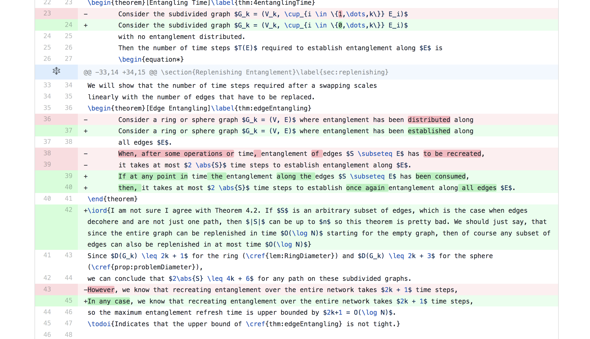
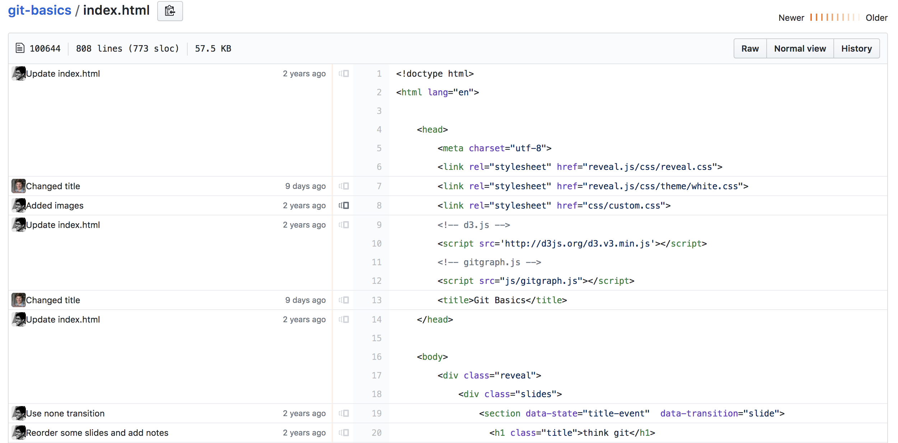
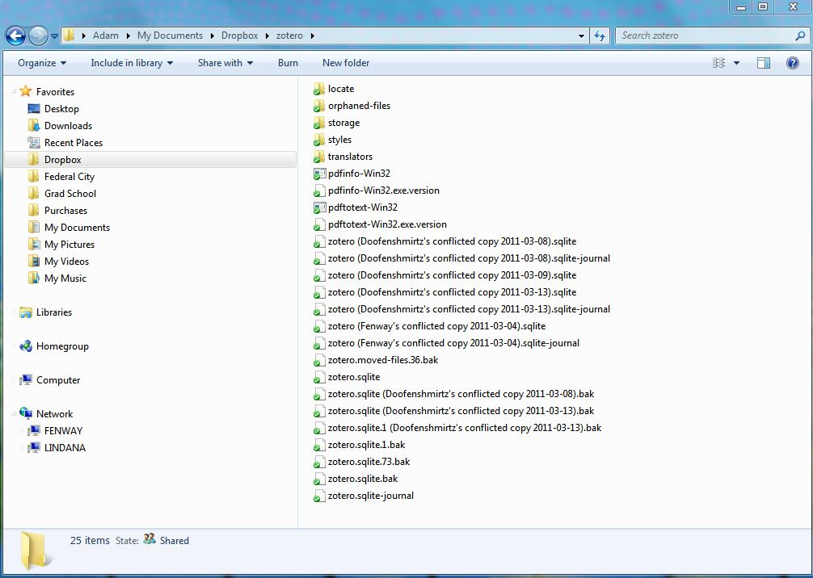

git basics

Text files
- Most of the files we work with are just text.
- Programmers have already figured out how to collaborate with text files: Version Control (e.g. git)!
git is a supplement to your workflow
workflow
Workflow
Edit files
$EDITORSave changes
git commitgit commit
git history is a graph
Workflow
git initEdit files
$EDITORAdd changes
git addReview changes
git status
Save changes
git commitDiff(erence)
Review status with git status
View changes with git diff

Track changes easily
Find who is to blame!
git blame

branches
git branch master
git checkout -b feature
git checkout master
git merge master
branches are just labels
the remote
Collaborate with others.Distributed Version Control
- Everyone owns a full copy of the repository.
- "The remote" is a special branch that tracks it's state.
git pull
git push
If the remote has changed, get the changes with
git pull before pushing.

git pull = git fetch + git merge
Remote is special branch, but a branch nonetheless
merge conflict

Uh-oh
If git cannot figure out what to do: Merge conflict!
Remote
animals.md:
# Favorite animal
Horse
Dolphin
Local
animals.md:
# Favorite animal
Horse
Chicken
git pull gives a merge conflict!
git status:
On branch master
You have unmerged paths.
(fix conflicts and run "git commit")
(use "git merge --abort" to abort the merge)
Unmerged paths:
(use "git add <file>..." to mark resolution)
both modified: animals.md
no changes added to commit (use "git add" and/or "git commit -a")
animals.md:
# Favorite Animal
Horse
<<<<<<< HEAD
Dolphin
=======
Chicken
>>>>>>> branch1
# Favorite Animal
Horse
Dolphin
Chicken
git add animals.mdgit commit
Review of big ideas
Branches are just labels
Remote is a branch too
Resolve conflicts
Cheat Sheet
Run "git" (or git help <command>)
Summarized cheat sheet
git <command> (or just run "git" for help):
init: Initialise git repo.status: Check status of repo. Use often!add: Add a file to staging (before committing).commit: Create a commit with your changespull: Pull changes from a remote repository.push: Push changes to a remote repository.branch: Create a branch.merge: Merge a branch.checkout: Switch to a branch.
Source code for this presentation